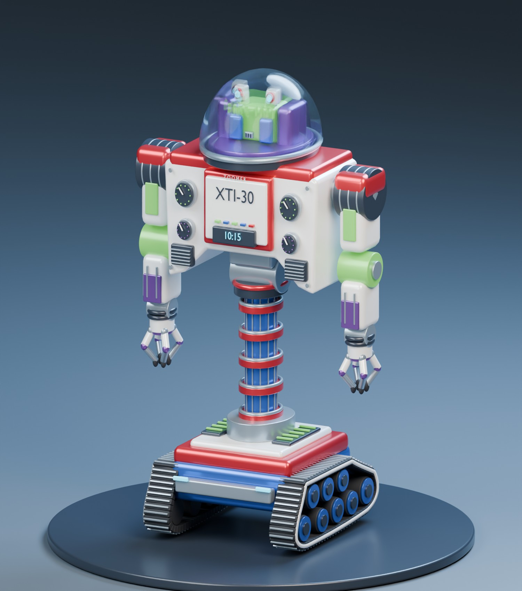

XTI-30 / A personal project
I drew him
at 13.
Now he's 3D.
In 1991, Zoomer lived on the pages of my notebook. Decades later, I used GPT-6 Astra to turn the color drawing into a 3D printable model. The articulated Blender robot was used in the AI-enabled training simulation.
Meet the original1991 Pen on paper2026 Plastic in the real world
